Twelve months of data show two demand spikes. One is real; the other is a retry bug wearing a spike costume - and a naive forecast would have bought $109k of stock for it. This skill forecasts honestly: data-quality gate first, measure what 12 months can prove, declare what they cannot, and turn a once-observed peak into a costed buy a P&L owner can actually sign. Seed 42, learn-python env, real Everrest marts.
This skill reads the marts produced by how-to-schema-and-warehouse. Two fields decide everything: orders.status (only delivered orders consumed stock) and orders.order_id - because if that key is not unique, every join fans out and the "demand" is partly fiction. It was not unique.
No new generator: the marts already exist (seed 42). What matters is what is hiding in them - each trap planted on purpose, each one caught (or honestly declared unmeasurable) in Step 5.
Everrest runs consignment fulfilment: the platform commits inventory in advance. Committing low burns margin; committing high burns cash in holding and markdown. The question is never "which model has the best MAPE".
A demand plan needs a series layer, candidate models, a validation harness that cannot peek, and the economics that turn a distribution into a signable number.
Order lines to daily delivered units, total and per category - plus the dedup gate that decides the whole analysis.
Holt-Winters exponential smoothing - the short-horizon winner, and honestly beaten at 120 days by a 9-parameter regression.
Expanding train window, untouched test window, at BOTH horizons - 28 days and the 120-day planning distance. No peeking, ever.
Size a spike against a baseline that never saw it - with every spike month held out, or the estimate contaminates itself.
q* = margin / (margin + overstock). The service level is a cost decision, not a taste - and the cost rates get their own sensitivity chart.
The warehouse skill built the marts; the EDA skills profiled them. This layer inherits their lineage and their planted traps.
One deterministic script (seeded per random purpose - two runs are byte-identical) walks from raw marts to a buy paper. Grab the real code:
The single most valuable "forecasting" step touched no model. 600 duplicate order rows - a retry bug, all in March - fan out against order_items and manufacture a whole phantom month.
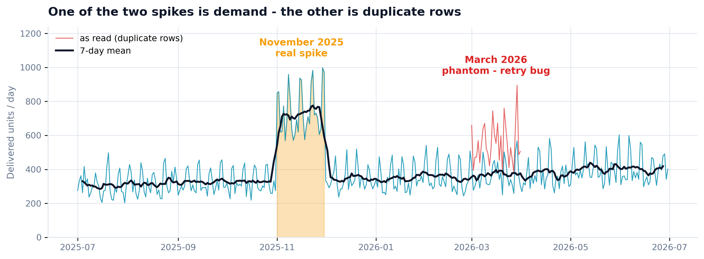
One year, two spikes - and only one survives the gate. The red trace is what the marts say as read; the cyan series is demand after deduplication.
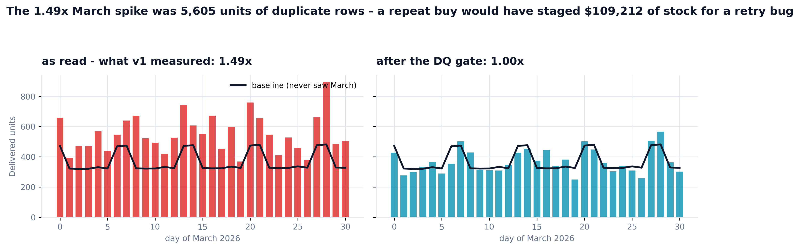
Same month, same baseline, before and after the gate: 1.49x becomes 1.00x. The v1 draft of this analysis skipped the gate, measured the phantom, and priced a repeat buy at $109,212 - the March recommendation is an engineering ticket, not a purchase order.
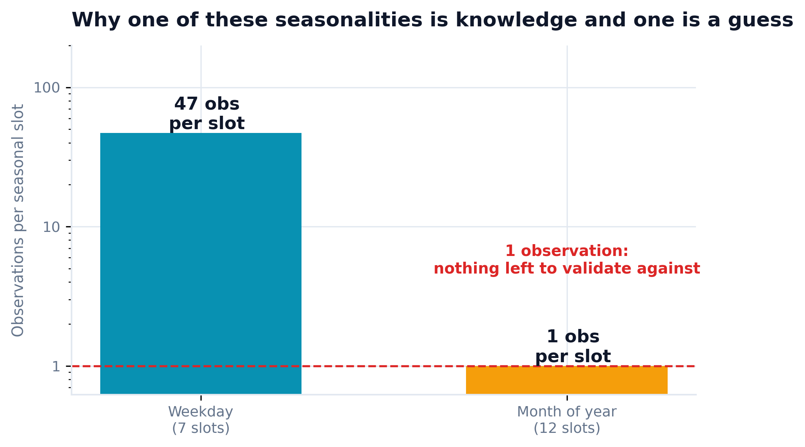
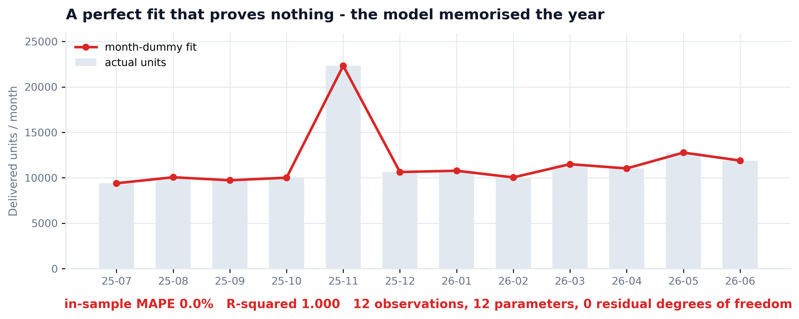
Left: weekday seasonality has 47+ observations per slot - knowledge. Month-of-year has exactly one - a guess. Right: the trap most tutorials fall into, shown rather than named: month dummies fit 12 points with 12 parameters, R-squared 1.000, and prove nothing.
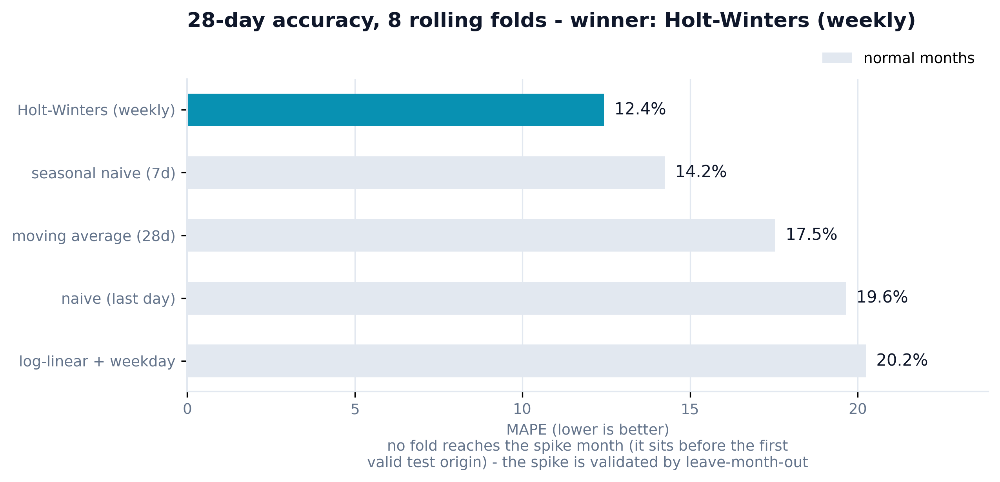
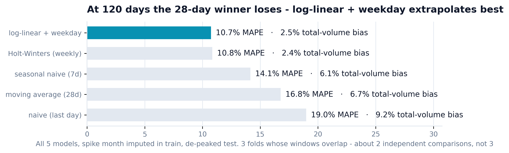
Left: at 28 days Holt-Winters wins (12.4% MAPE, 8 rolling folds). Right: at the 120-day planning distance the ranking flips - all five models race on a spike-imputed series, and log-linear + weekday takes it by a nose (10.7% vs 10.8%). The chart also confesses its own weakness: 3 overlapping folds are about 2 independent comparisons. The buy is 153 days out - past the last validated point, and the memo says so.
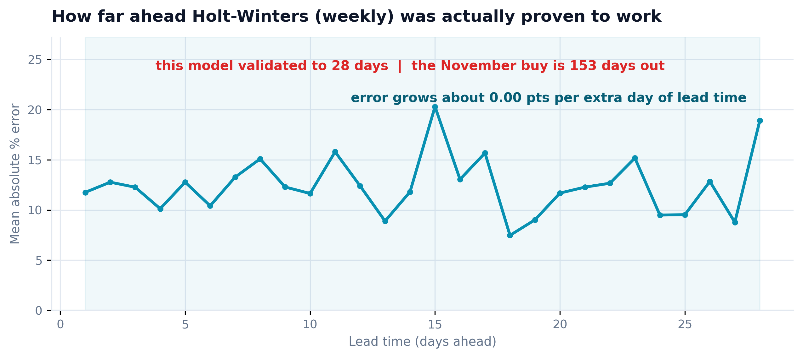
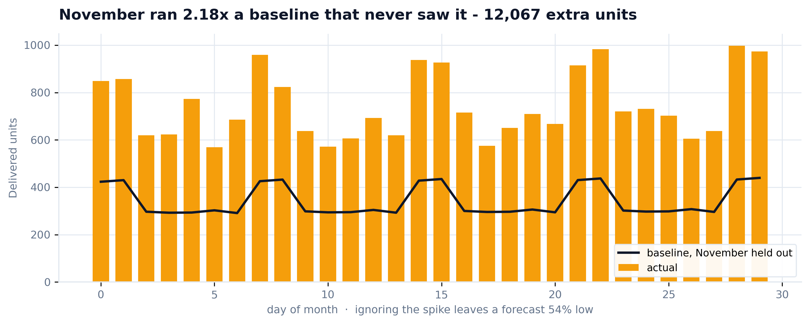
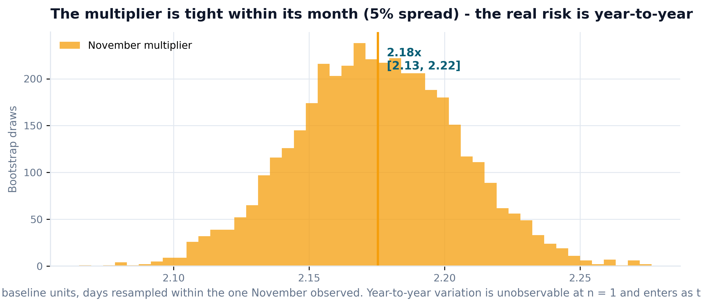
Left: November ran 2.18x a baseline fitted with the spike held out - 12,067 extra units. Right: the multiplier is tight within its month (5% spread). The dangerous uncertainty is year-to-year - unobservable at n = 1 - so it enters as a declared sigma with a sensitivity chart, never as a fake confidence interval.
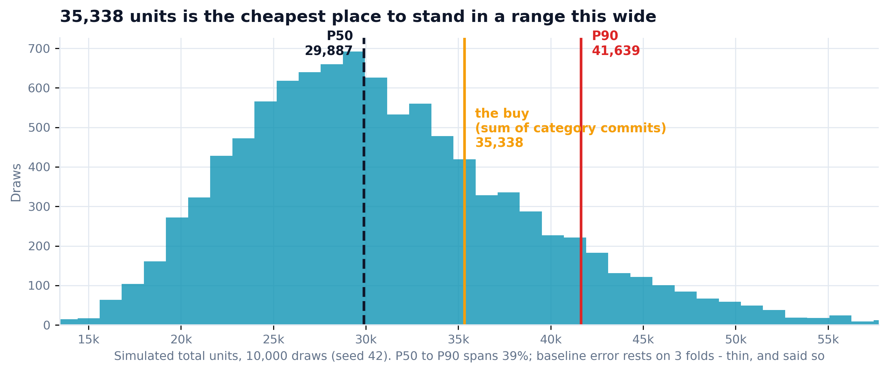
10,000 seeded draws: measured baseline error x measured day variation x the declared year sigma. The buy stands at the newsvendor optimum - above the middle, because being short costs 20% of price and being long costs 8%.
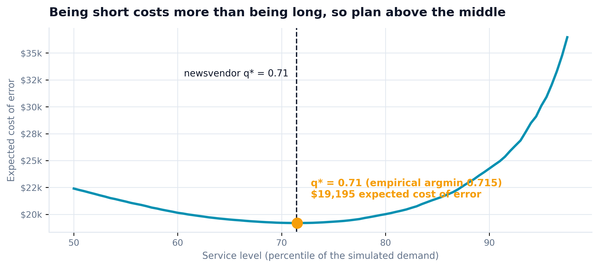
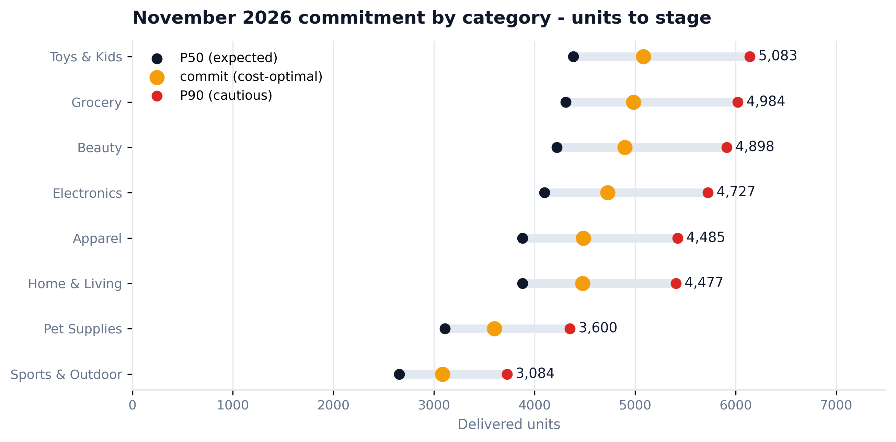
Left: the analytic q* (0.71) lands on the empirical cost minimum - the model checks itself. Right: every category simulated on its own baseline and its own multiplier - a real per-category newsvendor, not one pooled quantile split by share.
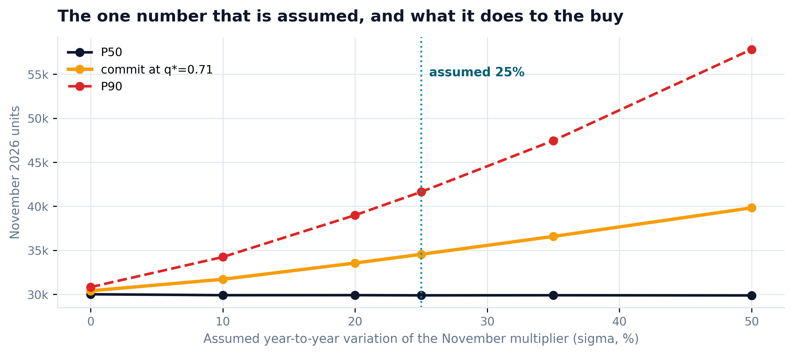
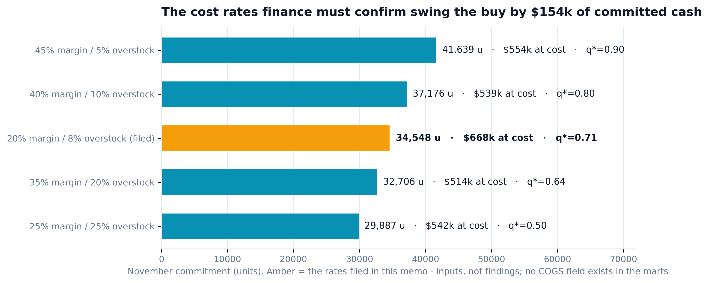
Left: the ONE declared unknown, swept: the commit moves 31% across sigma 0-50%; the P90 nearly doubles its distance. Right: the sweep most forecasts never run - the margin/overstock assumption swings the buy by $154k of committed cash, as hard as the model itself. Both are inputs; both get charts.
| Trap in the data | Naive forecast | This build | Status |
|---|---|---|---|
| Duplicate-row phantom spike | buys $109,212 of stock | DQ gate: 1.49x → 1.00x | ✓ caught before modeling |
| Once-observed November peak | hidden inside a CI | declared sigma + sensitivity | ✓ named as input |
| Month-dummy overfit | R² = 1.000, "seasonality!" | 12 obs, 12 params, shown | ✓ trap demonstrated |
| 28-day winner extrapolated 5 months | Holt-Winters everywhere | second race at 120d - new winner | ✓ horizon-honest |
| Units-only deliverable | "32k units" - unsignable | $683,810 at cost, tranched | ✓ priced for finance |
| Revenue-outlier reflex (M0007) | trims the top merchant | 0.3% of units - kept in | ✓ right metric, right treatment |
Five senior reviewer agents - forecasting methodology, supply-chain planning, executive insight, data engineering, commercial P&L - reviewed the v1 code and its real outputs. This was not polish: three findings changed the numbers, one changed the story. Every fix below is in the shipped code.
"Your March 'spike' is 100% the duplicate-row bug. orders.csv has 600 duplicated order_ids - all in March - and the join fans out 4x. The generator has no March demand term at all. Your memo says no driver exists in the marts; the driver IS the marts."
"Two real defects. Your error propagation multiplies by (1+e) where the algebra requires dividing - the residuals are asymmetric, so the whole distribution shifts the wrong way. And your 'median-preserving' lognormal subtracts sigma-squared-over-2, which preserves the mean instead - your sensitivity chart shows expected demand FALLING as uncertainty rises. That is an artifact, not a finding."
"Commit/P50 is 1.151 in all eight rows - that is not eight service levels, that is one platform quantile split by share, spending the pooling benefit without earning it. And no planner signs one irrevocable number 153 days out with no tranches and no weekly phasing."
"I cannot sign units. Where is the cash? And your 2.5x March asymmetry is just your two assumed cost rates restated as a finding - margin over overstock, the units cancel. Put the dollars in and sweep the rates you assumed."
"Your flagship chart is titled 'Simulated November units' - a technique label. And the long-horizon chart claims the weekly models 'cannot be fitted' on a gapped series. They can; the real reason is weekday phase. A false claim on the page path is worse than a wrong number."
# v1 (before): agg_rel_pct = (pred - actual) / actual, so truth = pred / (1+e). # Multiplying applies the model's bias in the WRONG direction: base = baseline_total * (1 + RNG.choice(long_resid, size=n)) # shifts LOW yoy = np.exp(RNG.normal(0, sigma, n) - sigma**2 / 2) # mean-preserving, median sags # v2 (after): divide to invert, drop the sigma^2/2 so the MEDIAN stays put base = baseline_total / (1.0 + resid_draws) # under-forecast bias corrected UP yoy = np.exp(z * sigma) # median 1.0 at every sigma
Install once, point it at your marts, set the calendar constants and the cost rates finance confirms - the same 6 steps produce your buy paper.
/plugin marketplace add phoebefu6/phoebe-data-skills /plugin install how-to-sales-forecasting@phoebe-data-skills